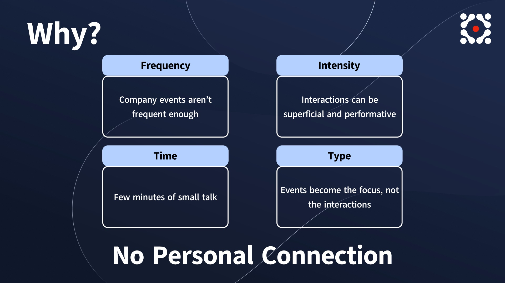
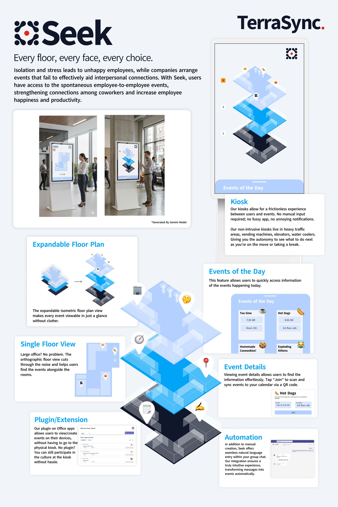
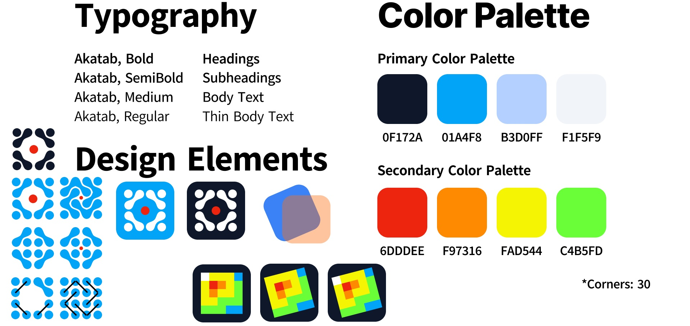
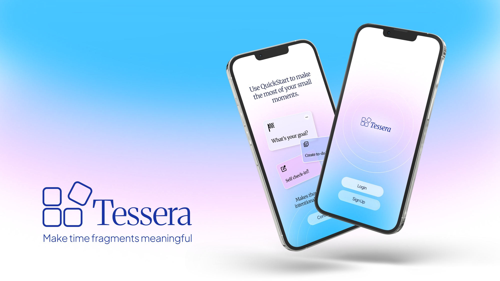

2026
Seek
A workplace platform that helps coworkers find the small things already happening around the office.

- Role
- User researcher and brand designer
- Event
- SCAD StartUp 2026
- Team
- Marie Françoise Cabibihan, Steven Yanzhi Chen, Priyanshi Jain, Hir Israni
- Format
- Kiosk, floor plan, Teams and Slack plugin
Problem
Planned fun rarely works
Companies organize team events to help people connect, and a lot of employees still feel isolated at work. A scheduled mixer feels like one more meeting.
The moments that actually bring coworkers together are small and unplanned. Someone brought in homemade cookies. Two people are walking out for coffee. A few teammates decide to eat lunch outside. Usually only the people sitting nearby ever find out.
Research
Billions spent on events people skip
Companies have reasons to care about this. Disengagement costs U.S. companies about $550 billion a year, and highly engaged teams bring in 21% more profit. So about $5.8 billion goes into team building events. Employees still do not like going.
To explain why, we used the FITT model, which measures connection by frequency, intensity, time, and type of interaction. Company events miss on all four.
- Frequency. Company events only happen once in a while.
- Intensity. The interactions can be superficial and performative.
- Time. A big event means a few minutes of small talk.
- Type. The event becomes the focus, not the people.
What we took from it: connection should be an invitation, not a mandate. People connect when they choose to show up.

Solution
A map of what is happening right now
Seek puts those moments on a map of the office so anyone can join.
- Expandable floor plan. An isometric view stacks every floor, so you can see the whole building at a glance.
- Single floor view. Tap a floor and it flattens out, with each event pinned to its room.
- Events of the day. A short list of what is going on today.
- Event details. Open one, scan the QR code to join, and it lands in your calendar.
- Kiosks. They sit where people already pass, like elevators and vending machines.
- Plugin. The same events inside Teams and Slack. Post "cookies in the kitchen" in a group chat and Seek turns it into an event.

My role
Research and brand
I was the team's user researcher and brand designer. On the research side, I looked into the market: what companies already do to connect employees, and why so much of it misses.
On the brand side, I designed Seek's visual identity and all of its brand assets, and built the slide deck system we pitched with.
I designed the logo. It is four people gathered around a center, represented by the red dot. You can also read it as tables and chairs pulled together into a circle or a square. Either way it means the same thing: connection. I played with a lot of variations before we settled on the final logo.
The rest of the identity uses Akatab for type, a dark navy with two blues as the main colors, and a small set of bright accents.

We also had to pitch it as a business. Seek would be sold to companies as a one-time kiosk installation plus a software subscription, aimed first at tech companies of 200 to 2,000 people that have called everyone back to the office.
